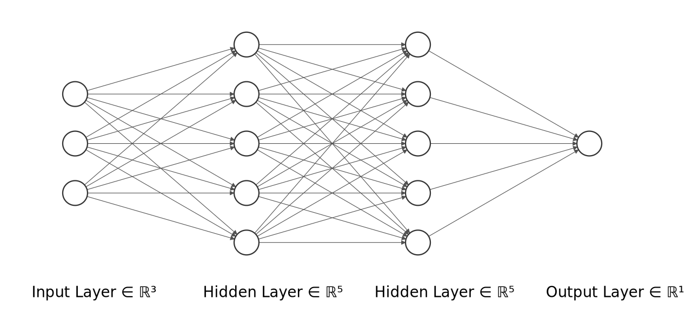

About
This is only a basic prototype of an application that tries to predict the
range that the EV can travel depending upon certain parameters. The application uses different tensorflow models
to continuosly capture necessary data from the sensors in the EV and make predictions for SOC, SOE, and finally
the range of the EV depending upon the current scenario/ environment of the vehicle.
The application uses three tensorflow models
1. SOC Predictor
This model focuses on predicting the SOC (State of Charge) of the battery from the battey's
voltage (V),
current (A), and
temperature (degree Celcius)
data.
For training the model, we have used the drive cycle data from the
Panasonic 18650PF Li-ion Battery
dataset. Various charging and discharging cycle tests were performed on the lithium-ion battery, at
different temperatures and rates. We are interested in the drive cycle data.The drive cycle power profile is
calculated for an electric
Ford F150 truck with a 35kWh battery pack scaled for a
single 18650PF cell.
For training the model for SOC estimation, we have used the drive cycle data available at 25℃, taking into
consideration, the real life temperature scenario of driving an EV. The required data was extracted out, it was
preprocessed,
outliers were removed, and it was normalized before using for training the tensorflow model. The neural network
architecture used in the model is as follows:

2. SOE Predictor
This model builds upon the SOC model. It focuses on predicting the SOE (State of Energy) of the battery from the
voltage (V),
current (A),
temperature (degree Celcius), and the
predicted value of
SOC.
For training the model, we have used the same dataset as we did for SOC model. The preprocessed data along with
the new predicted value for SOC, is used as an input to the neural network. We need the SOE for calculating the
amount of energy (kWh) remaining in the battery for range prediction.The neural network architecture used in the
model is as follows:
| Hyperparameters used for both models |
Value/ Type |
| Activation function for hidden layers |
RELU |
| Activation function for output layer |
Linear |
| Technique used to prevent overfitting |
Early Stopping |
| Optimizer |
Adam |
| Loss Function |
Mean Squared Error |
| Epochs |
700 |
| Batch Size |
512 |
For more information click here
3. Range Predictor
This model predicts the range that the EV can travel depending upon the features like
amount of battery energy remaining (kWh),
type of route,
status of A/C or heater in the car,
type of tyres used,
the driving style of the driver, and
average speed of the car.
For training the model, we have a used a dataset that contains real-life driving data of two Volkswagen e-Golf
cars, with year of manufacture as 2014 and 2016 respectively. The data is available at the Spritmonitor
website.
1.
Volkswagen e-Golf, year 2014, 85 kW (116 PS)
2.
Volkswagen e-Golf, year 2016, 85kW (116 PS)
The data was scrapped using a python crawler (vehicle_crawler.py) available
here
.
The file includes data about
3615 trips with a total travel distance of around
152167 kilometers. The data was
preprocessed, necessary features were one-hot encoded and standardized before being used to train the
model.
| Hyperparameters used for both models |
Value/ Type |
| Number of hidden layers |
2 |
| Number of nodes in each hidden layer |
32 |
| Activation function for hidden layers |
RELU |
| Activation function for output layer |
Linear |
| Technique used to prevent overfitting |
Early Stopping |
| Optimizer |
RMSprop |
| Loss Function |
Mean Absolute Error |
| Epochs |
1000 |
| Batch Size |
16 |
For more information click
here
Note: Due to the unavailability of a physical testing and data collection
environment, the application will take in values of the required features from a predefined csv file that contains
data for SOC & SOE estimation.
A few features required for range prediction, needs to be provided by the user on the next page.